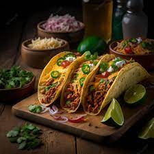

Pratos Típicos do México

Tacos
Os tacos são um dos pratos típicos mais famosos do México. Certamente, você já ouviu falar ou mesmo experimentou em algum restaurante temático.Esse prato recebe diversos recheios, como carnes variadas, queijo, tomate, alface e até feijão frito.

Chili com carne
Mais um prato de origem asteca, criado por volta do século XV, o chili é um tipo de guisado (ensopado) picante, que leva carne, feijão e tomate, além de, claro, muita pimenta!.